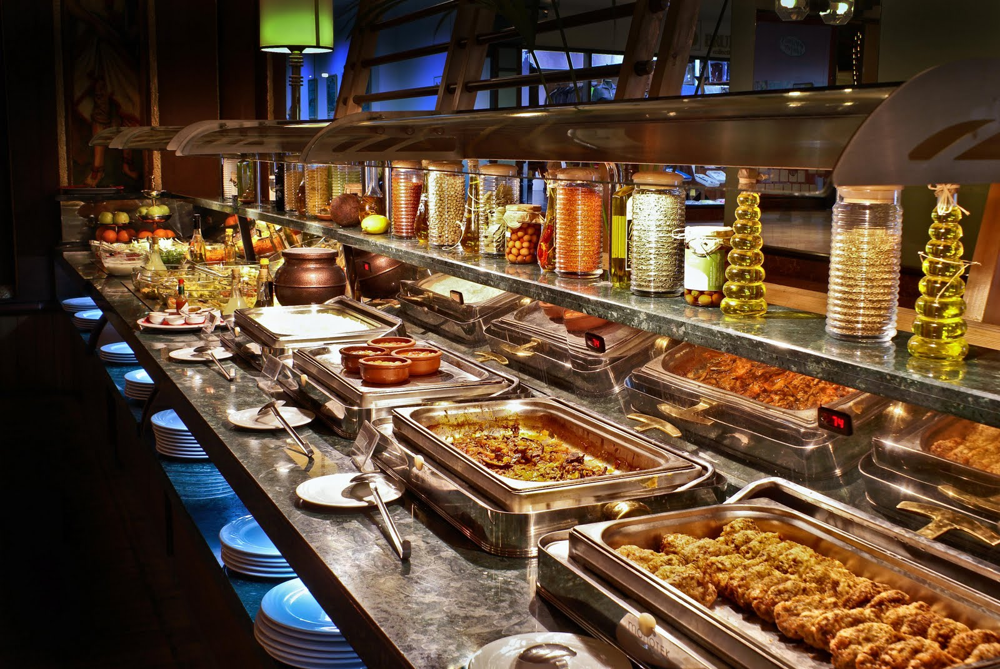
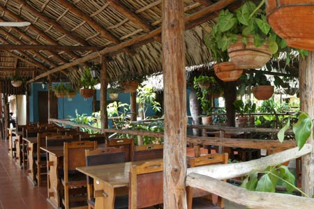
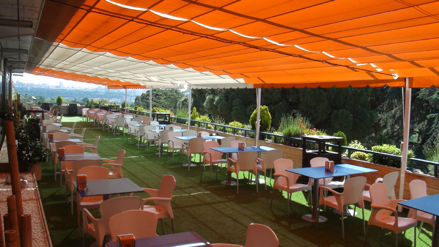

La selva es nuestra cadena de restaurantes especializados en alimentación saludable y dieta mediterránea.
Te ofrecemos un Buffet Libre en el que por un precio cerrado puedes comer lo que quieras. Tú escoges qué quieres comer. Puedes hacer tu propia receta ya que tenemos más de 1000 combinaciones para ti. Platos fríos y calientes. Come a tu ritmo en un ambiente agradable como ninguno.
El Restaurante Palmeras posee un toque al estilo campiña campestre con techo de guano y taburetes de madera, un sitio muy acogedor y fresco, con precios económicos y excelente sazón. Rodeado de plantas, arbustos y palmas, amenizado por las excelentes vistas al recinto, ofrece exquisitos platos de la cocina tradicional acompañado de cerveza u otra bebida, además cuenta con una cafetería con alimentos ligeros y una tienda.
Restaurante "Aves del Cielo"El Resturante "Aves del Cielo" es nuestra obra maestra en cuanto a restaurantes en un recinto tan especial como este. Situado a unos cuantas plantas del suelo, disfruta de la mejor comida de todos los continentes sin olvidarte de contemplar sus explendidas vistas hacia los animales y todo, disfrutando de la perfecta cohesion del recinto con los hábitat.